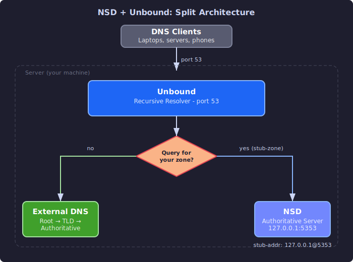

NSD and Unbound¶
This guide covers NLnet Labs' approach to DNS - purpose-built software for each role. NSD handles authoritative serving, Unbound handles recursive resolution, and splitting them eliminates an entire class of configuration mistakes and security vulnerabilities.
The NLnet Labs Approach¶
NLnet Labs is a Dutch non-profit that develops open-source DNS software. Their core philosophy is that authoritative and recursive DNS are fundamentally different tasks that should be handled by different software.
BIND does both. NLnet Labs argues this is like having one program that's both a web server and a web browser - technically possible, but mixing the roles increases complexity, attack surface, and the chance of misconfiguration. An authoritative server that accidentally enables recursion becomes an open resolver. A recursive server with a zone file bug can stop resolving entirely.
NLnet Labs' solution:
- NSD (Name Server Daemon) - authoritative only, reads zone files, serves answers
- Unbound - recursive only, chases referrals, caches, validates DNSSEC
You run them together: NSD serves your zones, Unbound handles recursion for your clients. You can run them on the same machine (different ports or IPs) or on different machines.
When to choose NSD + Unbound over BIND:
- You want clear separation of concerns
- You need maximum authoritative performance (NSD achieves roughly 10x the query throughput of BIND for authoritative serving, because it never has to handle recursion logic)
- You want DNSSEC validation enabled by default with minimal configuration
- You want to minimize attack surface
When BIND is better:
- You need views (split-horizon) on the authoritative side (NSD doesn't support views)
- You need RPZ
- You want one software to manage
NSD: Authoritative DNS¶
Installation¶
RHEL / AlmaLinux / Rocky:
Debian / Ubuntu:
nsd.conf Structure¶
NSD's configuration lives in /etc/nsd/nsd.conf and follows a clean block syntax:
# /etc/nsd/nsd.conf
server:
# Network
ip-address: 198.51.100.1
ip-address: 198.51.100.1@5353 # alternate port
port: 53
# Server identity
server-count: 2 # worker processes (match CPU cores)
hide-version: yes
identity: ""
# Zone storage
zonesdir: "/etc/nsd/zones"
zonelistfile: "/var/lib/nsd/zone.list"
# Database
database: "" # empty = use zone files directly (NSD 4.x+)
# Logging
logfile: "/var/log/nsd/nsd.log"
verbosity: 1
# Zones defined below or in included files
include: "/etc/nsd/zones.conf"
Key Differences from BIND¶
| Feature | BIND | NSD |
|---|---|---|
| Recursion | Yes | No |
| Zone file format | Standard | Standard (identical) |
| Configuration syntax | C-like blocks | YAML-like key-value |
| Reload behavior | Re-parses zone files | Compiles zones to optimized format |
| Views / split-horizon | Yes | No |
| RPZ | Yes | No |
| Memory usage | Higher | Lower |
| Authoritative throughput | Baseline | ~10x higher |
NSD uses the exact same zone file format as BIND - you can copy zone files directly between them.
Zone Definitions¶
The zone file goes in the zonesdir directory (e.g., /etc/nsd/zones/example.com.zone). The format is identical to BIND - see the Zone Files and Records guide.
Validation and Reload¶
# Check configuration syntax
nsd-checkconf /etc/nsd/nsd.conf
# Check a zone file
nsd-checkzone example.com /etc/nsd/zones/example.com.zone
# Reload a zone after editing
nsd-control reload example.com
# Reload all zones
nsd-control reload
# Force re-read of nsd.conf (picks up new zones)
nsd-control reconfig
nsd-control Commands¶
| Command | Action |
|---|---|
nsd-control status |
Show server status |
nsd-control reload |
Reload all zones |
nsd-control reload example.com |
Reload a specific zone |
nsd-control reconfig |
Re-read config, add/remove zones |
nsd-control write |
Write zone data to zone files |
nsd-control stats |
Show query statistics |
nsd-control stats_noreset |
Show stats without resetting counters |
nsd-control zonestatus example.com |
Show zone details |
nsd-control transfer example.com |
Force a zone transfer (for secondaries) |
nsd-control force_transfer example.com |
Transfer even if serial hasn't changed |
nsd-control log_reopen |
Reopen log files (for log rotation) |
NSD Primary/Secondary¶
Primary Configuration¶
On the primary, allow zone transfers and send notifications:
zone:
name: "example.com"
zonefile: "example.com.zone"
provide-xfr: 203.0.113.2 NOKEY # allow transfers to this IP
notify: 203.0.113.2 NOKEY # notify this IP on changes
Secondary Configuration¶
On the secondary:
zone:
name: "example.com"
zonefile: "example.com.zone"
request-xfr: 198.51.100.1 NOKEY # pull zone from this primary
allow-notify: 198.51.100.1 NOKEY # accept NOTIFY from primary
TSIG Authentication¶
Generate a TSIG key:
Or generate manually:
Add the key to both servers' nsd.conf:
key:
name: "example-transfer-key"
algorithm: hmac-sha256
secret: "jF3K8vQ2+xN7wP5dR9mB0kT4yH1cA6uZ..."
Reference the key in zone definitions:
Primary:
zone:
name: "example.com"
zonefile: "example.com.zone"
provide-xfr: 203.0.113.2 example-transfer-key
notify: 203.0.113.2 example-transfer-key
Secondary:
zone:
name: "example.com"
zonefile: "example.com.zone"
request-xfr: 198.51.100.1 example-transfer-key
allow-notify: 198.51.100.1 example-transfer-key
Test the transfer:
Unbound: Recursive DNS¶
Unbound is a validating, recursive, caching DNS resolver. It validates DNSSEC by default, supports DNS over TLS (DoT), DNS over HTTPS (DoH), and experimentally DNS over QUIC (DoQ).
Installation¶
RHEL / AlmaLinux / Rocky:
Debian / Ubuntu:
Basic Caching Resolver¶
# /etc/unbound/unbound.conf
server:
# Network
interface: 0.0.0.0
interface: ::0
port: 53
# Access control
access-control: 127.0.0.0/8 allow
access-control: 192.168.0.0/16 allow
access-control: 10.0.0.0/8 allow
access-control: 0.0.0.0/0 refuse # deny everyone else
# Performance
num-threads: 2 # match CPU cores
msg-cache-size: 64m
rrset-cache-size: 128m # should be 2x msg-cache-size
cache-max-ttl: 86400
cache-min-ttl: 0
# Privacy and security
hide-identity: yes
hide-version: yes
harden-glue: yes
harden-dnssec-stripped: yes
use-caps-for-id: yes # 0x20-encoded randomization
# DNSSEC - enabled by default with auto-trust-anchor-file
auto-trust-anchor-file: "/var/lib/unbound/root.key"
# Logging
verbosity: 1
logfile: "/var/log/unbound/unbound.log"
log-queries: no # enable for debugging only
auto-trust-anchor-file - Unbound ships with the root zone's DNSSEC trust anchor and keeps it updated automatically using RFC 5011. DNSSEC validation is on by default - you get it for free.
use-caps-for-id - implements 0x20 encoding, which randomizes the case of letters in DNS queries. This makes cache poisoning attacks harder because the attacker has to guess the exact case pattern. ExAmPlE.CoM and example.com are the same name in DNS, but the response must preserve the query's case, adding entropy to the transaction.
Forwarding vs Full Recursion¶
By default, Unbound does full recursion - it starts at the root servers and chases referrals down to the authoritative server. You can configure it to forward queries to another resolver instead:
# Forward all queries to upstream resolvers
forward-zone:
name: "." # all domains
forward-addr: 1.1.1.1 # Cloudflare
forward-addr: 8.8.8.8 # Google
forward-tls-upstream: yes # use DNS over TLS
Full recursion gives you the most control and privacy (your queries go directly to authoritative servers, not through a third party). Forwarding is simpler and may be faster if the upstream resolver has a large cache.
Local Zone Overrides¶
Unbound can override responses for specific domains - useful for internal DNS, split-horizon, or blocking:
server:
# Internal hostname
local-zone: "internal.example.com." static
local-data: "server1.internal.example.com. A 10.0.0.10"
local-data: "server2.internal.example.com. A 10.0.0.11"
# Block a domain (return NXDOMAIN)
local-zone: "ads.badsite.com." always_nxdomain
# Redirect a domain
local-zone: "oldsite.example.com." redirect
local-data: "oldsite.example.com. A 198.51.100.50"
Local zone types:
| Type | Behavior |
|---|---|
static |
Only answer with local-data, NXDOMAIN for anything else |
redirect |
Answer queries for the exact name with local-data |
always_nxdomain |
Always return NXDOMAIN |
always_refuse |
Always return REFUSED |
transparent |
Use local-data if available, otherwise resolve normally |
deny |
Drop the query silently |
unbound-control Commands¶
# Setup (first time only - generates TLS keys for control)
unbound-control-setup
# Status and statistics
unbound-control status
unbound-control stats_noreset
Annotated stats output:
total.num.queries=152847 # total queries received
total.num.cachehits=139201 # answered from cache (91%)
total.num.cachemiss=13646 # required upstream resolution
total.num.recursivereplies=13640 # recursive queries completed
total.requestlist.avg=0.3 # average pending queries
total.requestlist.max=12 # peak concurrent queries
num.query.type.A=98241 # A record queries
num.query.type.AAAA=42103 # AAAA record queries
A cache hit rate above 80-90% is normal for a resolver serving active users.
Other useful commands:
| Command | Action |
|---|---|
unbound-control reload |
Reload configuration |
unbound-control flush example.com |
Flush cache for a name |
unbound-control flush_zone example.com |
Flush entire zone from cache |
unbound-control dump_cache |
Dump cache contents to stdout |
unbound-control load_cache |
Load cache from stdin |
unbound-control list_local_zones |
Show configured local zones |
unbound-control list_forwards |
Show configured forwarders |
Running NSD + Unbound Together¶
The most common NLnet Labs deployment runs NSD and Unbound on the same machine: NSD serves your authoritative zones, and Unbound handles recursion for your clients.
Architecture¶

Configuration¶
NSD listens on a non-standard port or localhost-only:
# /etc/nsd/nsd.conf
server:
ip-address: 127.0.0.1@5353
ip-address: 198.51.100.1 # still serve external auth queries on port 53
port: 53
zone:
name: "example.com"
zonefile: "example.com.zone"
Unbound handles all client queries and forwards your own zones to NSD:
# /etc/unbound/unbound.conf
server:
interface: 0.0.0.0
port: 53
access-control: 192.168.0.0/16 allow
access-control: 0.0.0.0/0 refuse
# Forward queries for your zones to local NSD
stub-zone:
name: "example.com"
stub-addr: 127.0.0.1@5353
stub-prime: no # don't use NS records, always use stub-addr
stub-zone:
name: "100.51.198.in-addr.arpa"
stub-addr: 127.0.0.1@5353
stub-prime: no
stub-zone (not forward-zone) is the right directive here. A stub zone tells Unbound to query the specified server directly for that zone, as if it were an authoritative server. A forward zone tells Unbound to use the specified server as a recursive resolver. Since NSD is authoritative (not recursive), use stub-zone.
NSD vs BIND: When to Choose What¶
| Consideration | NSD | BIND |
|---|---|---|
| Role | Authoritative only | Authoritative + recursive |
| Performance (authoritative) | Higher throughput | Baseline |
| Memory usage | Lower | Higher |
| Configuration | Simple YAML-like | Feature-rich C-like |
| Views / split-horizon | Not supported | Full support |
| RPZ | Not supported | Full support |
| DNSSEC signing | External tools (ldns) | Built-in (dnssec-policy) |
| Zone file format | Standard (identical) | Standard |
| Community/docs | Smaller but dedicated | Largest |
| Pair with | Unbound (for recursion) | Standalone |
Choose NSD when you want a fast, focused authoritative server with minimal attack surface. Pair it with Unbound for recursion.
Choose BIND when you need views, RPZ, built-in DNSSEC key management, or a single server that handles everything.
Both are production-quality, well-maintained, and used by major organizations. The choice is more about operational philosophy than capability.
Further Reading¶
- NSD Documentation - NLnet Labs official NSD docs
- Unbound Documentation - NLnet Labs official Unbound docs
- NLnet Labs - organization overview and projects
- RFC 5011 - Automated Updates of DNSSEC Trust Anchors
- DNS Flag Day - DNS standards compliance initiative
Previous: BIND | Next: PowerDNS | Back to Index